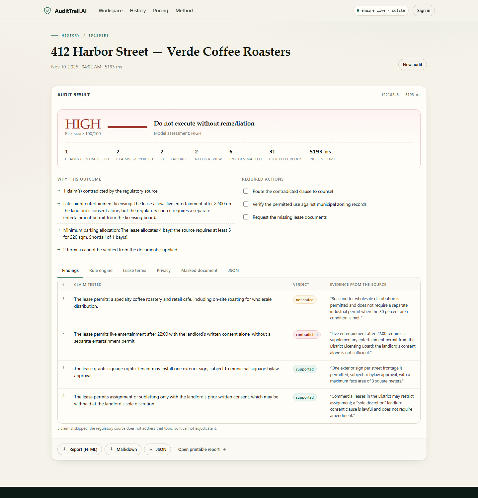

Lease compliance with receipts.
A commercial lease audit in five seconds, with an evidence quote for every finding. Paste a lease and the zoning source it must satisfy. AuditTrail masks every tenant identifier, reads the operative terms verbatim, tests each claim against the source, computes the numeric rules itself, and returns a defensible first pass that a firm can send to a client.
A first-pass lease review takes three to six hours, mostly locating clauses and cross-checking a zoning extract. Generic LLMs make it worse: they summarise without citations and cannot be handed a tenant's name, SSN and bank details.
The gap is not "an AI that reads contracts". It is an audit a lawyer can defend line by line, on documents that never leave the firm.
| Step | Endpoint | Group | Output → downstream effect |
|---|---|---|---|
| Protect | POST /clocked/pii | Protect / Guard / Inspect | Entity spans become stable tokens; only masked text reaches the later steps. |
| Guard | POST /clocked/injection | Protect / Guard / Inspect | A dangerous verdict aborts the audit before extract, verify and decide. |
| Extract | POST /clocked/extract | Decide / Extract / Fill | Twelve verbatim fields become the claim list and the numeric facts. |
| Verify | POST /clocked/grounding | Verify / Compare / Rerank | Per-claim verdicts and quotes drive the risk policy and the report. |
| Decide | POST /clocked/decide | Decide / Extract / Fill | Calibrated risk, actions and review flag set the banner and checklist. |
Why the arithmetic is separate. Asked whether four bays satisfy a two-per-100 sqm rule on 220 sqm, the model answered “not stated”. The rule engine computed ceil(220 ÷ 100 × 2) = 5 and reported a one-bay shortfall. Models read; code counts.
| Deterministic check | Result | Computation |
|---|---|---|
| Minimum parking allocation | Fail | ceil(220 ÷ 100 × 2) = 5 vs 4 |
| Late-night entertainment permit | Fail | consent alone ≠ permit |
| Roasting process area cap | Review | process area not stated |
| Service bay delivery window | Pass | 05:00–11:00 ⊆ 05:00–11:00 |

Supabase Auth with row-level security; the backend verifies the token and ignores any client-supplied user id.
Free, Solo, Firm and Enterprise; server-side monthly allowance; 402 with usage for upgrades; Stripe Checkout when configured.
Paid plans mint API keys, stored only as SHA-256 digests, accepted as X-API-Key on the same routes.
Print-ready HTML/PDF, Markdown and JSON; white-label on Firm; every export carries the evidence and the limitations.
One command to run, Docker and Render config, health endpoint, sanitised errors, SQLite fallback when Supabase is absent.
Each report records Clocked credits and model milliseconds, computed from the API's own timing field.
Overage $2.00 per audit. Measured cost to serve: 24–31 Clocked credits, $0.007–$0.009 (1 credit = 25 ms model time; $0.30 per 1,000 credits on Build). That is a ~98% gross margin at Solo list price. Break-even is roughly two Solo customers.
Not implemented: Compare, Fill, Rerank, Inspect. The rule engine covers the numeric patterns it knows; other jurisdictions need a rule pack. Supabase needs a one-time schema run; until then the product uses SQLite and says so.